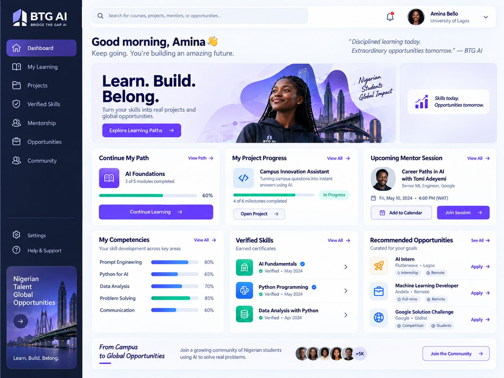
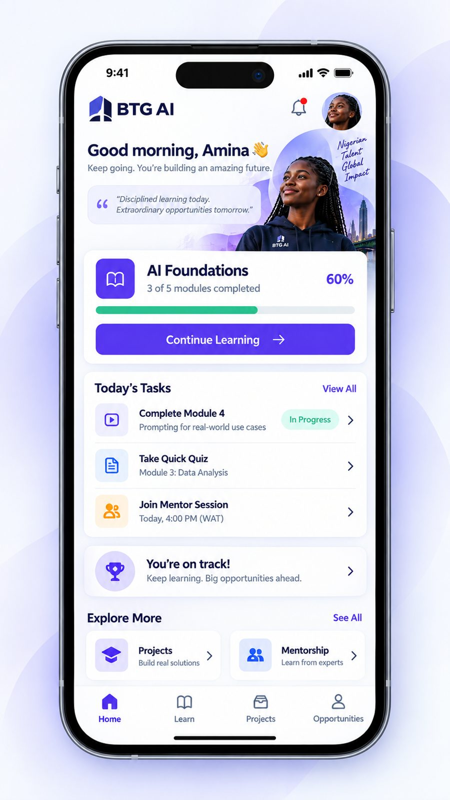

AI Tutor
Explains, questions, and gives hints — it won't finish graded work for you, and it always tells you when it's unsure.
For learners everywhere — built for global opportunity
BTG AI turns curiosity into capability: a personalized path from your first prompt to a portfolio of real, verified work — with projects, mentors, and opportunities built for where you're headed.
Built on a foundation of real curriculum, real mentors, and real employer input
No wall of courses to guess through. BTG AI figures out where you're starting from, then gives you one path forward — with proof at every step.
A short diagnostic looks at your current digital and AI literacy — not just what you've studied, but what you can actually do.
Your plan is generated from your goals and your results, and it tells you exactly why each step is there and what it unlocks.
Work through lessons and labs with an AI tutor at your side, then put it to use in real, hands-on projects — solo or with a team.
Submissions are reviewed against clear rubrics, by mentors and AI working together, so a verified skill actually means something.
Your portfolio, on your terms, opens the door to internships, challenges, and roles from partners who value verified work.
Eight parts of the platform work together — you'll rarely think about them separately.
Explains, questions, and gives hints — it won't finish graded work for you, and it always tells you when it's unsure.
Your plan follows your diagnostic and your goals — not a fixed syllabus everyone works through in the same order.
Build something that solves an actual problem, alone or in a team, with checkpoints so feedback comes early and often.
Every credential is tied to evidence you produced — reviewed work, not a quiz score or a completion badge.
Sessions, goals, and feedback from people working in the field — not just automated encouragement.
Internships, challenges, and roles matched to what you've actually demonstrated — with gaps shown honestly, not hidden.
Cohorts, peer help, and events with people on the same path — moderated so it stays a place worth showing up to.
A clear view of your competencies, streaks, and growth — so "am I improving?" always has a straight answer.
Pick up your path on a laptop between classes, or on your phone on the way home — your progress, projects, and mentor sessions stay in sync either way.


Students are the center of BTG AI, but they don't get there alone.
Sponsor cohorts, see program outcomes, and give students a practical AI track that complements what they're already studying.
Talk to us about your campus →Post real challenges, contribute problems worth solving, and meet candidates through verified, evidence-backed portfolios.
Partner with BTG AI →Fund learners or cohorts and see governed, honest reporting on what that funding actually produced.
Explore sponsorship →Can't find what you're looking for? Reach out — we're happy to walk through it.
BTG AI is built for learners worldwide who want practical, usable AI skills — whatever they're studying, wherever they live. You don't need a computer science background to start; you need curiosity and a willingness to build.
No. Your path starts from a diagnostic, not an assumption. Non-technical tracks focus on applying AI to research, writing, analysis, and business problems. If you want to go deeper, a technical track covering programming and applied AI development is there when you're ready.
A verified skill is tied to evidence — a submission, a project, a reviewed piece of work — not just to finishing a video or passing a quiz. Mentors and reviewers sign off on it, so it means something to the person reading your portfolio.
Core learning paths are free to get started. Sponsored access is available through participating universities and programs, and premium tracks and credentials exist for learners who want to go further.
Yes. Universities, employers, and sponsor organizations can all work with BTG AI — from sponsoring a cohort to contributing real challenges. Reach out through the contact details in the footer and we'll take it from there.
You control what's visible on your portfolio and to whom — private, institution-visible, partner-visible, or public. We only collect what's needed to personalize your learning and never share your work without your say-so.